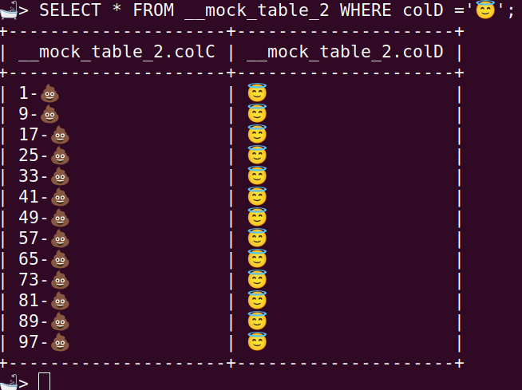
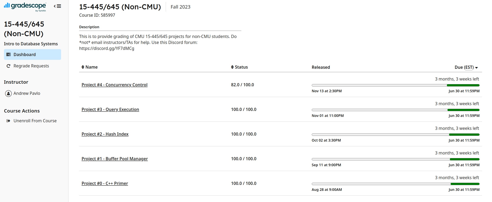

BusTub：CMU 15-445 数据库项目
Thank you! Andy Pavlo & Jignesh Patel for the great course!

也许每每看到这个SQL查询结构的时候，也都会感慨万分罢！一开始总觉得很困难，但还是走过来了。

不过，这的确没有“真正”终结。目前还差最后的一小部分，但正如 Project 中所说：
目前到达这里也算是一个小小的里程碑了，在回头拿到这完整的 100pts 以及 Bonus 之前，也许需要转向去看看生活中更重要的事情了。加油
Bugs:
- 在实现脏页回写的时候，测试时发现数据并没有成功写入，而用 gdb 调试的时候总是成功写入。因为读取磁盘的操作是异步的，所以需要等待读取完成后再返回 在 gdb 模式中由于运行慢，所以可以看到数据。没有正确理解 std::future, std::promise 的异步、callback 机制。
- 页的并发 bug 以及忘记取页用完后 Drop() 导致页一直停留在 BufferPool 中：封装 Guard 类，使用 RAII 自动释放锁以及 Drop()。
- 关于 LRU-K，有的细节没有弄清楚，没有全局的理解，也没有全局的大致设计好就实现，细节很容易出错。例如 history_ 链表记录时间戳，这是用于 insert k_list_ 所用的，因为当所有 LRU_Node 都在 k_list_ 中时，需要根据 history_ 来 evict.
- 测试与Debug:Print结构以及对实现细节的理解。
BusTub：CMU 15-445 数据库项目
https://github.com/Cookiecoolkid/Cookiecoolkid.github.io/2025/03/07/Bustub-CMU-15-445😇/